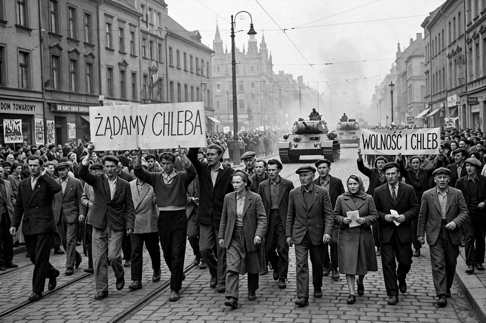

The Poznań 1956 protests, also known as Poznań June (Polish: Poznański Czerwiec), were the first of several massive protests against the communist government of the Polish People's Republic. Demonstrations by workers demanding better working conditions began on 28 June 1956 in Poznań, at the Cegielski Factories, and were met with violent repression.
Around 100,000 workers gathered chanting "We want bread!" The protest turned into a general uprising; protesters stormed the secret police headquarters and prison. The army, under Konstantin Rokossovsky, deployed tanks; at least 57 people were killed (estimates up to 100) and hundreds wounded; about 250 were arrested.
The protests helped bring Władysław Gomułka to power in the Polish October thaw. A memorial, the Poznań Crosses, was erected in 1981. 28 June is now a Polish national day of remembrance.
See also: Polish October